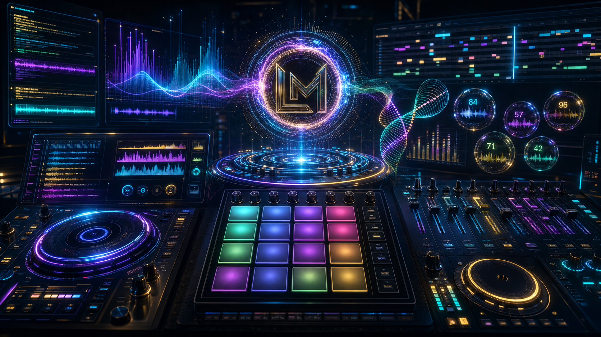

Stem Mixer
Eight default channels with trim, mute, solo, EQ, filter, sends, meters, waveform views, and stem-map export.
 LOTTOMINDED ULTRA
LOTTOMINDED ULTRA

Make beats, mix stems, master tracks, trigger touch-reactive pads, build Suno and video prompts, and generate Beat DNA creative signals from one cinematic browser studio.
Open the full LottoMind Stem Studio workstation inside this branded page. Switch to Mobile View to test the same app in a phone-style performance frame.
Load stems you own, shape channels, trigger pads, sequence patterns, sketch melodies, record input, blend DJ decks, and export project data without cloud calls or backend services.

Use the branded motion package before demos, walkthroughs, pitch decks, social clips, and product launches. The render is local, deterministic, and rights-safe.
Eight default channels with trim, mute, solo, EQ, filter, sends, meters, waveform views, and stem-map export.
Real pressure where supported, simulated velocity on regular touch screens, banks, note repeat, samples, and keyboard shortcuts.
Song editor, patterns, piano roll, automation lanes, MIDI import/export, mixer channels, and Web Audio plugin hooks.
Streaming-safe mastering targets, smart EQ moves, loudness checks, reference matching, and export reports.
Two original local-file decks with cue points, pitch, pitch bend, EQ, filter, crossfader, waveforms, and deck recording hooks.
Analyze your current beat, stems, pads, BPM, effects, arrangement, and mixer choices into copy-ready Suno prompts, AI video prompts, and creative number signals. The website and app never submit, scrape, or upload audio.
Toggle a phone-style view for touch-first sessions, quick checks, and mobile sharing. The preview loads the same local studio route, so pads, transport, prompts, and project controls stay connected to the real app experience.
Use the browser studio for full desktop production, or turn on Mobile Mode for a focused touch-first preview. Everything remains local-first with no backend service required.
Load or record audio you own or have permission to use. Generated music prompts should describe original work and avoid artist imitation or copyrighted lyrics. Creative number signals are entertainment-only and not predictions.